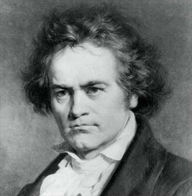

Some time after 1779, Beethoven began his studies with his most important teacher in Bonn, Christian Gottlob Neefe, who was appointed the Court's Organist in that year.[16] Neefe taught him composition, and by March 1783 had helped him write his first published composition: a set of keyboard variations (WoO 63).[13] Beethoven soon began working with Neefe as assistant organist, at first unpaid (1781), and then as a paid employee (1784) of the court chapel conducted by the Kapellmeister Andrea Luchesi. His first three piano sonatas, named "Kurfürst" ("Elector") for their dedication to the Elector Maximilian Friedrich (1708–1784), were published in 1783. Maximilian Frederick noticed his talent early, and subsidised and encouraged the young man's musical studies.
With the Elector's help, he left Bonn for Vienna in November 1792, amid rumours of war spilling out of France; he learned shortly after his arrival that his father had died.[30][31][32] Mozart had also recently died. Count Waldstein, in his farewell note to Beethoven, wrote: "Through uninterrupted diligence you will receive Mozart's spirit through Haydn's hands."[32] Over the next few years, Beethoven responded to the widespread feeling that he was a successor to the recently deceased Mozart by studying that master's work and writing works with a distinctly Mozartean flavour.